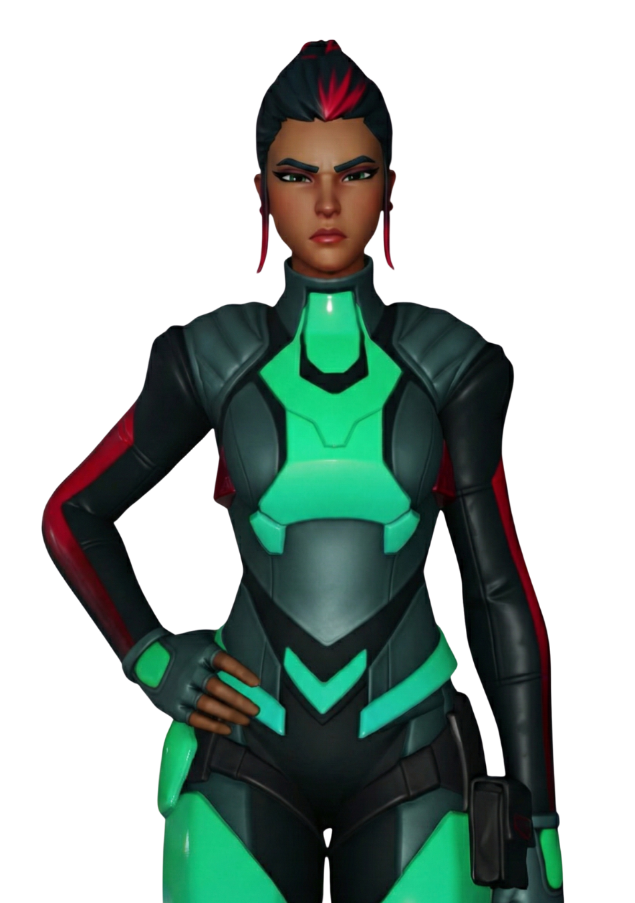
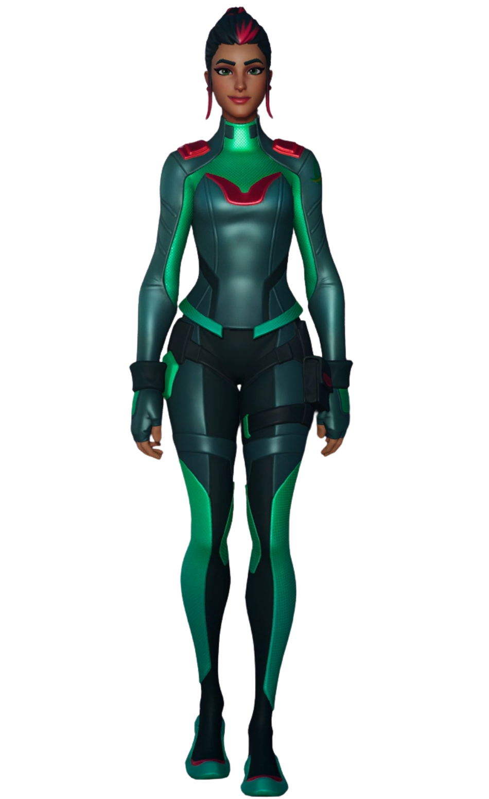
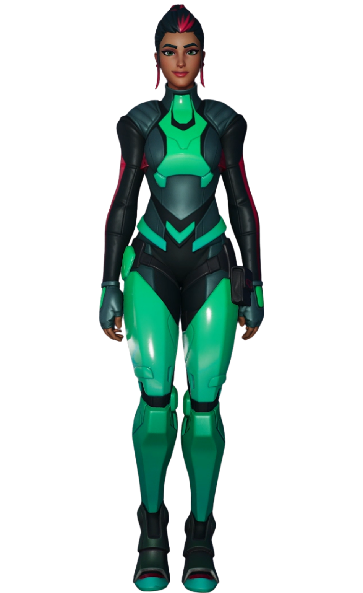

Singularité
// Archives Biographiques
L'Architecte de Neo Tilted
Surgissant des cendres de l'ancienne capitale, Singularité a supervisé la construction de Neo Tilted, une métropole futuriste alimentée par une source d'énergie inconnue. Vénérée par les citoyens comme une sauveuse, sa statue trône au cœur de la ville. Pourtant, derrière ce masque de bienveillance se cache un agent dormant de l'Institut Onirique, placée au pouvoir pour contrôler la surface après la chute des rois élémentaires.
Le Pion de l'Ordre
Son rôle véritable a été percé à jour par Lucie lors d'une infiltration informatique (découvrant le mot de passe "ORION"). Singularité n'était qu'un rempart temporaire, chargé de détourner l'attention du public des expériences souterraines menées sur le Point Zéro, enfoui sous le Lac Indigo.
Le Sacrifice Final
Son destin s'est scellé lors de l'invasion des Kimeras. Enlevée par un rayon tracteur devant son peuple impuissant, elle a été conduite au cœur du vaisseau mère alien. Soumise à une torture psychique d'une violence inouïe par le leader envahisseur, son esprit a fini par être totalement détruit. Elle est décédée en captivité, emportant avec elle les derniers secrets de l'Institut, juste après avoir été forcée de révéler l'emplacement du Point Zéro.
// Variantes Visuelles

